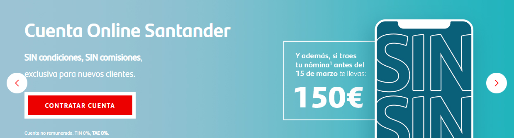

1/6
Este número es indicativo del riesgo del producto, siendo 1/6 indicativo de menor riesgo y 6/6 de mayor riesgo.
Banco Santander está adscrito al Fondo de Garantía de Depósitos de Entidades de Crédito. Para depósitos en dinero el importe máximo garantizado es de 100.000 euros por depositante en cada entidad de crédito
Este indicador de riesgo hace referencia a la Cuenta Online Santander
